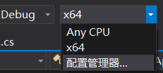
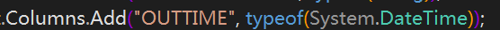

首先使用PL/SQL 通过语句：select * from v$version; 查询出使用的oracle版本，弄到对应版本的Oracle.DataAccess.DLL
我本地使用版本为：11.2.0.4.0 （64位）
Oracle.DataAccess.DLL下载地址：https://www.oracle.com/database/technologies/odac-downloads.html
下载之后DLL所在目录：ODAC112040Xcopy_64bit\odp.net20\odp.net\bin\2.x\Oracle.DataAccess.dll
代码如下（转）：
/// <summary>
/// 批量插入数据
/// </summary>
/// <param name="table">数据表</param>
/// <param name="targetTableName">数据库目标表名</param>
/// <returns></returns>
public bool ExcuteBulkData(DataTable table, string targetTableName)
{
bool result = false;
using (OracleConnection conn = new OracleConnection(connectionString))
{
using (OracleBulkCopy bulkCopy = new OracleBulkCopy(connectionString,OracleBulkCopyOptions.Default))
{
if (table != null && table.Rows.Count > 0)
{
bulkCopy.DestinationTableName = targetTableName;
for (int i = 0; i<table.Columns.Count; i++)
{
string col = table.Columns[i].ColumnName;
bulkCopy.ColumnMappings.Add(col, col);
}
conn.Open();
bulkCopy.WriteToServer(table);
result = true;
}
}
}
return result;
}
第一次项目启动之后报错信息：其他信息: 未能加载文件或程序集“Oracle.DataAccess, Version=2.112.4.0, Culture=neutral, PublicKeyToken=89b483f429c47342”或它的某一个依赖项。试图加载格式不正确的程序。
找到解决办法:visual studio 启动时修改解决方案平台：，这里把Any CPU改为x64，没有X64需要自己添加。
之后又碰到 如下错误：其他信息: ORA-1843: not a valid month，后来发现是传入方法的DataTable里面对应字段没有设置时间格式。(DataTable里面字段顺序和格式要和插入的表一致